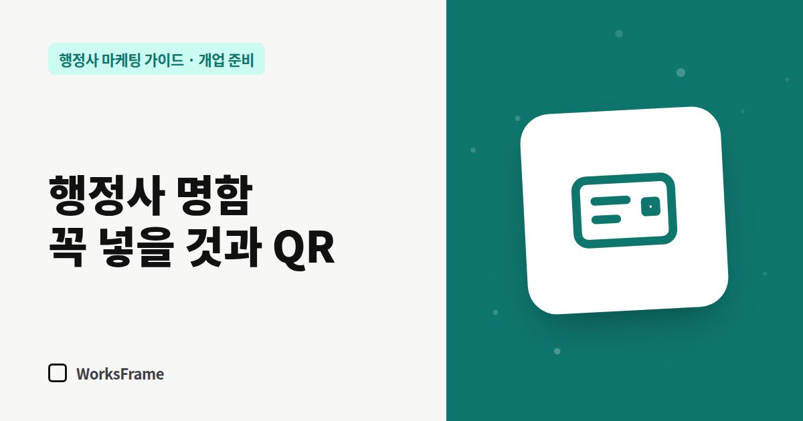

개업 준비
행정사 명함에 꼭 넣을 것 — 주력 업무 한 줄과 QR 활용법
한 줄 답
앞면엔 사무소명·이름·주력 업무 한 줄·전화, 뒷면엔 주소·카톡·홈페이지·QR 한 개를 넣으세요. QR 아래에 무엇이 열리는지 적어 두면 더 많이 찍습니다.

명함은 받는 순간보다 며칠 뒤에 일합니다. 받은 사람이 지갑에서 다시 꺼내 볼 때, 무슨 일을 하는 사무소인지 바로 떠올라야 하고 연락 방법이 쉬워야 합니다.
앞면: 3초 안에 읽히는 정보
- 사무소명 (모든 온라인 등록과 같은 표기)
- 이름과 직함 — “행정사 ○○○”
- 주력 업무 한 줄 — 예: “체류·비자 · 외국인 고용” / “공장등록 · 개발행위 허가”
- 대표 전화
뒷면: 연락과 확인
- 주소 (건물명·호수)
- 카카오톡 채널 또는 상담용 카톡
- 홈페이지 주소
- QR 코드 1개
- 상담 시간
QR은 한 개만, 목적지는 신중하게
QR을 여러 개 넣으면 무엇을 찍어야 할지 헷갈립니다. 하나만 넣고 목적지를 정하세요.
| 목적지 | 잘 맞는 경우 |
|---|---|
| 홈페이지 첫 화면 | 업무 설명과 신뢰가 중요한 경우 |
| 카카오톡 채널 | 바로 상담을 받고 싶은 경우 |
| 네이버 플레이스 | 방문 상담 위주, 길 찾기가 중요한 경우 |
QR 아래에 “업무 안내 보기” 또는 “카톡 상담”처럼 무엇이 열리는지 짧게 적어 두면 찍는 사람이 늘어납니다.
외국인 고객이 많다면
출입국 업무라면 뒷면을 영어(또는 주요 고객 언어)로 만들고, QR을 다국어 안내 페이지로 연결하세요.
명함을 나눠 주는 곳
- 관공서·은행 근처 협업 상대 (세무사, 노무사, 공인중개사)
- 기존 고객에게 두 장씩 — “주변에 필요한 분 계시면 전해 주세요”
- 지역 상공회의소·협회 모임
소개를 늘리는 방법은 소개가 끊기지 않게에서 이어서 다룹니다.
자주 묻는 질문
명함에 업무를 전부 적는 게 낫지 않나요?
업무 목록이 길어지면 아무것도 기억에 남지 않습니다. 앞면은 주력 업무 한 줄로 두고, 나머지는 QR로 연결되는 홈페이지에서 보여 주세요.
QR 주소를 나중에 바꿔도 되나요?
명함을 다시 찍어야 합니다. 그래서 목적지를 홈페이지처럼 오래 유지할 주소로 정하는 게 좋습니다.